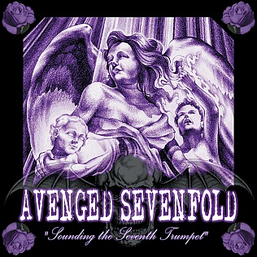
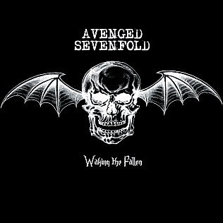
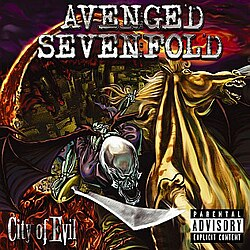
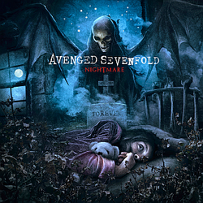
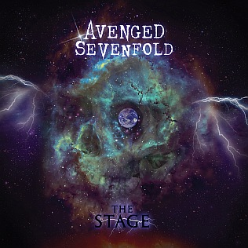
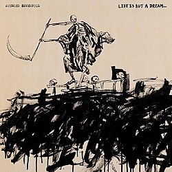

Lista de Albuns do Avenged Sevenfold
- Sounding The Seventh Trumpet – 2001
- Waking The Fallen – 2003
- City of Evil – 2005
- Avenged Sevenfold – 2007
- Nightmare – 2010
- Hail To The King – 2013
- The Stage – 2016
- Life Is But a Dream... – 2023

Sounding The Seventh Trumpet 2001
Tracks
- “To End The Rapture”
- “Turn The Other Way”
- “Darkness Surrounding”
- “The Art Of Subconscious Illusion”
- “We Come Out At Night”
- “Lips Of Deceit”
- “Warmness On The Soul”
- “An Epic Of Time Wasted”
- “Breaking Their Hold”
- “Forgotten Faces”
- “Thick And Thin”
- “Streets”
- “Shattered By Broken Dreams”

Waking The Fallen 2003
Tracks
- “Waking the Fallen”
- “Unholy Confessions”
- “Chapter Four”
- “Remenissions”
- “Desecrate Through Reverence”
- “Eternal Rest”
- “Second Heartbeat”
- “Radiant Eclipse”
- “I Won’t See You Tonight, Pt. 1”
- “I Won’t See You Tonight, Pt. 2”
- “Clairvoyant Disease”
- “And All Things Will End”

City of Evil 2005
Tracks
- “Beast and the Harlot”
- “Burn It Down”
- “Blinded in Chains”
- “Bat Country”
- “Trashed and Scattered”
- “Seize the Day”
- “Sidewinder”
- “The Wicked End”
- “Strength of the World”
- “Betrayed”
- “M.I.A.”
Avenged Sevenfold 2007
Tracks
- “Critical Acclaim”
- “Almost Easy”
- “Scream”
- "Afterlife”
- “Gunslinger”
- “Unbound (The Wild Ride)”
- “Brompton Cocktail”
- “Lost”
- “A Little Piece of Heaven”
- “Dear God”

Nightmare 2010
Tracks
- “Nightmare”
- “Welcome to the Family”
- “Danger Line”
- “Buried Alive”
- “Natural Born Killer”
- “So Far Away”
- “God Hates Us”
- “Victim”
- “Tonight The World Dies”
- “Fiction”
- “Save Me”
Hail to The King 2013
Tracks
- “Shepherd of Fire”
- “Hail to the King”
- “Doing Time”
- “This Means War”
- “Requiem”
- “Crimson Day”
- “Heretic”
- “Coming Home”
- “Planets”
- “Acid Rain”

The Stage 2016
Tracks
- "The Stage"
- "Paradigm"
- "Sunny Disposition"
- "God Damn"
- "Creating God"
- "Angels"
- "Simulation"
- "Higher"
- "Roman Sky"
- "Fermi Paradox"
- "Exist"

Life Is But a Dream... 2023
Tracks
- "Game Over"
- "Mattel"
- "Nobody"
- "We Love You"
- "Cosmic"
- "Beautiful Morning"
- "Easier"
- "G"
- "(O)rdinary"
- "(D)eath"
- "Life Is But a Dream..."